随便聊聊:为什么打补丁要重启
引子
我有一个朋友，因为最近微软出了很多漏洞修复补丁，导致需要频繁的打补丁。在打补丁重启之后，有些机器出现了蓝屏等等一些奇怪的问题。所以问题来了，为什么给Windows打补丁要重启，不重启行不行。
结论
先说结论，不重启大部分情况下是没问题的。但是不建议
需要重启的理由
动态链接库
在分析原因之前，需要先聊一下，为什么需要重启。在聊重启之前，又要聊一下Windows的动态链接库 (DLL) 。
动态链接库相当于组成乐高的不同砖块。有些是铺在底下的砖头，如果要更换这些砖头，就需要把这块砖上关联的东西都铲了（停止），才能更换。比如要拆除下图左下角的砖，换一个别的颜色。除了把整个风车拆除，别无她法。
对于Windows，操作系统的很多功能都由 DLL 提供。 此外，当您在这些操作系统中的一个Windows程序时，该程序的很多功能可能由 DLL 提供。 例如，某些程序可能包含许多不同的模块，并且程序的每个模块包含在 DLL 中并分发。
使用 DLL 有助于促进代码的模块化、代码重用、高效的内存使用并减少磁盘空间。 因此，操作系统和程序加载速度更快，运行速度更快，并且占用了更少的磁盘空间。
为什么会重启
知道了最重要的原理，回到为什么会重启的问题：安装安全更新后，如果满足下列条件之一，系统可能会提示您重新启动计算机：
- 安全更新将更新一个 DLL，该 DLL 加载在由 Windows 所需的一个或多个进程中
- 安全更新将更新.exe文件，该文件当前作为应用程序所需的进程Windows
- 安全更新将更新当前使用的设备驱动程序，以及当前Windows。 使用此设备驱动程序时无法完成更新，但是，你无法卸载此设备驱动程序，除非你关闭Windows。
- 安全更新对注册表进行更改。 这些更改要求您重新启动计算机。
- 安全更新将更改在您启动计算机时只读的注册表项。
说了那么多点，在于更新的过程，可能（很大概率）会修改Windows的基石。如果细心观察，有的小伙伴可能会遇到系统提示当前无法安装补丁，会在下一次重启时安装。
重启的几种状态
在我们双击补丁程序之后，可能会发生以下几种情况
- 没有任何提示，系统不要求重启
- 要求重启
- 提示在下一次重启时进行安装。
打补丁为什么会打出新问题
微软的补丁有一个特色，就是可能会解决一些问题的同时，带来一些新问题。
事情的根因大约可以归于动态链接库机制。不同的应用、服务、角色之间有着千丝万缕的关联。Windows上可以安装各种各样的软件、功能、角色，在补丁发版之前很难说做到万全的测试。如果很不幸的撞到了没有测试的项目上，就算中招了。
再比如，安装完某个补丁后没有重启，然后开始安装新的补丁。这种场景测试人员也很难复现。
更为严重的是，如果打补丁出现问题，也不见得次次都能还原回去。
重启能解决什么问题
回到最初的问题，虽然问题是打补丁为什么要重启（打完补丁之后重启），但在打补丁之前，我们提前重启一次，可以避免很多问题。
- 当前系统安装完补丁还未重启
- 当前系统安装完某个软件后未重启
- 当前系统的某个功能或角色，配置完成后还未重启
如果在安装补丁之前，提前重启一次，以上问题带来的潜在风险都可以避免。
检查是否需要重启
在打补丁之前重启，是为了避免存在一些已经要重启了但是没重启的情况，但是这种状态可以提前查询么？答案是肯定的。当重新启动挂起时，Windows 会添加一些注册表值来显示这一点。所以要做的就是检查这些各种各样的注册表。
下面的这个脚本来自Adam Bertram，作者是微软的在任MVP。直接照抄就可以了。
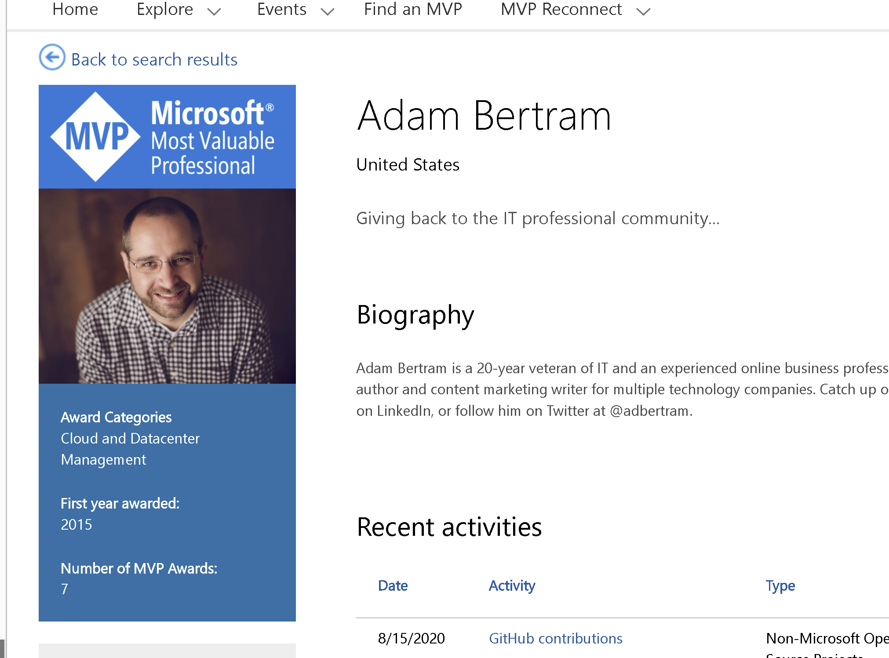
展示效果具体是这样的
1
2
3
4
5
PS51> Test-PendingReboot.ps1 -ComputerName localhost
ComputerName IsPendingReboot
------------ ---------------
localhost False
以下是测试代码。
1
2
3
4
5
6
7
8
9
10
11
12
13
14
15
16
17
18
19
20
21
22
23
24
25
26
27
28
29
30
31
32
33
34
35
36
37
38
39
40
41
42
43
44
45
46
47
48
49
50
51
52
53
54
55
56
57
58
59
60
61
62
63
64
65
66
67
68
69
70
71
72
73
74
75
76
77
78
79
80
81
82
83
84
85
86
87
88
89
90
91
92
93
94
95
96
97
98
99
100
101
102
103
104
105
106
107
108
109
110
111
112
113
114
115
116
117
118
119
120
121
122
123
124
125
126
127
128
129
130
131
132
133
134
135
136
137
138
139
140
function TestPendingreboot($ComputerName)
{
#功能来源：https://adamtheautomator.com/pending-reboot-registry-windows/
if ($ComputerName -match ";")
{ $ComputerName = $ComputerName.split(";") }
$scriptBlock = {
function Test-RegistryKey
{
[OutputType('bool')]
[CmdletBinding()]
param
(
[Parameter(Mandatory)]
[ValidateNotNullOrEmpty()]
[string]$Key
)
$ErrorActionPreference = 'Stop'
if (Get-Item -Path $Key -ErrorAction Ignore)
{
$true
}
}
function Test-RegistryValue
{
[OutputType('bool')]
[CmdletBinding()]
param
(
[Parameter(Mandatory)]
[ValidateNotNullOrEmpty()]
[string]$Key,
[Parameter(Mandatory)]
[ValidateNotNullOrEmpty()]
[string]$Value
)
$ErrorActionPreference = 'Stop'
if (Get-ItemProperty -Path $Key -Name $Value -ErrorAction Ignore)
{
$true
}
}
function Test-RegistryValueNotNull
{
[OutputType('bool')]
[CmdletBinding()]
param
(
[Parameter(Mandatory)]
[ValidateNotNullOrEmpty()]
[string]$Key,
[Parameter(Mandatory)]
[ValidateNotNullOrEmpty()]
[string]$Value
)
$ErrorActionPreference = 'Stop'
if (($regVal = Get-ItemProperty -Path $Key -Name $Value -ErrorAction Ignore) -and $regVal.($Value))
{
$true
}
}
# Added "test-path" to each test that did not leverage a custom function from above since
# an exception is thrown when Get-ItemProperty or Get-ChildItem are passed a nonexistant key path
$tests = @(
{ Test-RegistryKey -Key 'HKLM:\SOFTWARE\Microsoft\Windows\CurrentVersion\Component Based Servicing\RebootPending' }
{ Test-RegistryKey -Key 'HKLM:\Software\Microsoft\Windows\CurrentVersion\Component Based Servicing\RebootInProgress' }
{ Test-RegistryKey -Key 'HKLM:\SOFTWARE\Microsoft\Windows\CurrentVersion\WindowsUpdate\Auto Update\RebootRequired' }
{ Test-RegistryKey -Key 'HKLM:\Software\Microsoft\Windows\CurrentVersion\Component Based Servicing\PackagesPending' }
{ Test-RegistryKey -Key 'HKLM:\SOFTWARE\Microsoft\Windows\CurrentVersion\WindowsUpdate\Auto Update\PostRebootReporting' }
{ Test-RegistryValueNotNull -Key 'HKLM:\SYSTEM\CurrentControlSet\Control\Session Manager' -Value 'PendingFileRenameOperations' }
{ Test-RegistryValueNotNull -Key 'HKLM:\SYSTEM\CurrentControlSet\Control\Session Manager' -Value 'PendingFileRenameOperations2' }
{
# Added test to check first if key exists, using "ErrorAction ignore" will incorrectly return $true
'HKLM:\SOFTWARE\Microsoft\Updates' | ?{ test-path $_ -PathType Container } | %{
(Get-ItemProperty -Path $_ -Name 'UpdateExeVolatile' | Select-Object -ExpandProperty UpdateExeVolatile) -ne 0
}
}
{ Test-RegistryValue -Key 'HKLM:\SOFTWARE\Microsoft\Windows\CurrentVersion\RunOnce' -Value 'DVDRebootSignal' }
{ Test-RegistryKey -Key 'HKLM:\SOFTWARE\Microsoft\ServerManager\CurrentRebootAttemps' }
{ Test-RegistryValue -Key 'HKLM:\SYSTEM\CurrentControlSet\Services\Netlogon' -Value 'JoinDomain' }
{ Test-RegistryValue -Key 'HKLM:\SYSTEM\CurrentControlSet\Services\Netlogon' -Value 'AvoidSpnSet' }
{
# Added test to check first if keys exists, if not each group will return $Null
# May need to evaluate what it means if one or both of these keys do not exist
('HKLM:\SYSTEM\CurrentControlSet\Control\ComputerName\ActiveComputerName' | ?{ test-path $_ } | %{ (Get-ItemProperty -Path $_).ComputerName }) -ne
('HKLM:\SYSTEM\CurrentControlSet\Control\ComputerName\ComputerName' | ?{ test-path $_ } | %{ (Get-ItemProperty -Path $_).ComputerName })
}
{
# Added test to check first if key exists
'HKLM:\SOFTWARE\Microsoft\Windows\CurrentVersion\WindowsUpdate\Services\Pending' | Where-Object {
(Test-Path $_) -and (Get-ChildItem -Path $_)
} | ForEach-Object { $true }
}
)
foreach ($test in $tests)
{
if (& $test)
{
$true
break
}
}
}
foreach ($computer in $ComputerName)
{
$connParams = @{
'ComputerName' = $computer
}
$output = @{
ComputerName = $computer
IsPendingReboot = $false
}
$psRemotingSession = New-PSSession @connParams
if (-not ($output.IsPendingReboot = Invoke-Command -Session $psRemotingSession -ScriptBlock $scriptBlock))
{
$output.IsPendingReboot = $false
}
[pscustomobject]$output
}
}
总结
想一想，因为疫情的紧张，我们已经知道出门要戴口罩。
先说结论，不
带口罩大部分情况下是没问题的。但是不建议
同理，打补丁重启其实没什么可讨论的，当把它当做一个预防和保护措施的时候，能够节省很多麻烦。当然最重要的是，打补丁之前要做足够多的验证。
随便聊聊:如何硬气的打补丁不重启
上一篇文章介绍了为什么微软的系统，打补丁了要重启。这是一个既成事实，说的是如何去接受这个事实。
但是今天的故事会更有一点意思，我们介绍一下特定场景中，如何做到打补丁不重启的，也就是不去接受上面的事实。
虽然打补丁重启很麻烦，但是需要注意的是，在Windows 10/Windows Server 2016以后的操作系统中，我们不需要在意补丁的细节，只需要安装最新的补丁，这种补丁是累计更新的。
而在Windows7以及更早的系统中，补丁的安装是这样的：
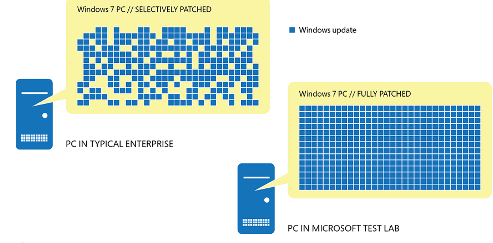
早期的补丁安装方式优点和缺点同样明显：
- 补丁一般有专门的应对功能，相对体积较小，安装速度快。
- 补丁2的安装可能依赖补丁1，有时候不见得会有很明确的说明。
- 补丁3可能替换了补丁1，在安装补丁3的时候不需要安装补丁1。
- 安装补丁依然会有可能需要重启。
如何做到打补丁不重启
打补丁不重启不是什么高科技，这只是微软的产品功能。说到功能，就要理解一般来说，这会有限制条件。一个恰当的比喻类似于显卡的光线追踪。
而在打补丁这个事情里，这项技术叫做 Azure Automanage 热补丁，他是随着Windows Server 2022的发布而带来的功能，但是这项功能又不是泛指所有的Windows Server 2022，它只支持一种操作系统
- Windows Server 2022（core）
再次强调一下，是Windows Server 2022的CORE版。虽然使用CORE版会减低被攻击的风险，但是没有图形界面对大多数朋友来说，应该还是会带来一些障碍的。
而且也不是随便一个平台，随便一个版本就支持，它只存在下面两种环境中。
- Azure（公有云）
- AzureStack HCI（混合云）
也就是说，本地化的Windows Server 2022（零售、EA）并不支持这项功能。要在自家数据中心使用这项功能，必须要使用AzureStack HCI，而云端则必须要选择Azure。
什么是 Azure Automanage 热补丁
这里简单介绍一下这项功能：
“Windows Server 2022 Datacenter：Azure 版本”支持 Azure Automanage 中的热补丁。 热修补是在新的 Windows Server Azure Edition 虚拟机 (VM) 上安装更新的一种新方式，安装后无需重新启动。 有关详细信息，请参阅 Azure Automanage 文档。
热补丁目前处于公共预览版中。需要一个选择加入程序才能使用下面描述的功能。此预览版在没有服务级别协议的情况下提供，不建议用于生产工作负载。某些功能可能不受支持或功能受限。有关详细信息，请参阅Microsoft Azure 预览版的补充使用条款。
热补丁的工作原理
Hotpatch 的工作原理是首先使用 Windows 更新最新累积更新建立基线。基于该基线的热补丁会定期发布（例如，每月的第二个星期二）。热补丁将包含不需要重新启动的更新。定期（从每三个月开始）使用新的最新累积更新刷新基线。
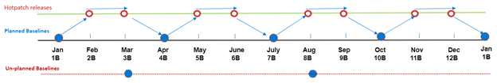
上面的话很官方，简单来说就是这样：
- 可以做到打补丁不重启，但是这只能坚挺三个月
- 每3个月会打一个基线补丁，这个时候会重启。
- 周而复始
回到和Windows7时代的补丁机制对比，每个补丁很小，对系统的影响相对较小。但是每3个月会对齐一下基线，让补丁不至于和Win7一样乱，这对于解决补丁依赖和补丁替代，会有积极的作用。
除了上面计划内的补丁安装之外，也可能会出现一些计划外的补丁，比如重大的0day，那就可能会发布新的需要重启的补丁。
补丁安装的原则是这样的：
- 分类为“关键”或“安全”的补丁会自动下载并应用到虚拟机上。
- 在 VM 时区的非高峰时段应用补丁程序。
- 补丁编排由 Azure 管理，补丁的应用遵循可用性优先原则。
- 监控通过平台健康信号确定的虚拟机健康状况以检测修补故障。
实现
要开始在Azure上新 VM 上使用热补丁，请执行以下步骤：
- 启用
预览访问- 每个订阅都需要启用一次性预览访问权限。
- 可以通过 API、PowerShell 或 CLI 启用预览访问，如下面的“启用预览访问”部分所述。
- 从 Azure 门户开始创建新 VM
- 在预览期间，您需要开始使用此特定链接创建。
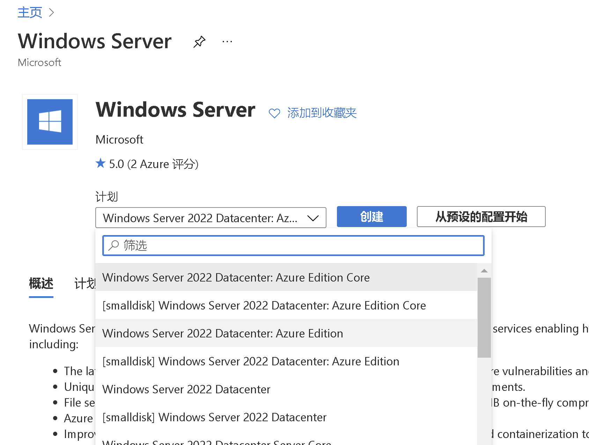
- 在 VM 创建期间提供详细信息
- 确保在“图像”下拉列表中选择了受支持的Windows Server Azure 版图像。使用本指南确定支持哪些图像。
- 在“来宾操作系统更新”部分下的“管理”选项卡上，选中“启用热补丁”复选框以在预览时评估热补丁。补丁编排选项将设置为“Azure 编排”。
- 在“Azure Automanage”部分下的“管理”选项卡上，为“Azure Automanage 环境”选择“开发/测试”或“生产”，以在预览时评估 Automanage 机器最佳实践。
- 创建你的新虚拟机
补丁更新
我们可以手动的对系统打一下补丁，试验一下效果，看看到底是不是真的不用重启。
- 在安装好的操作系统，进入
来宾和主机更新→转到热补丁（预览）
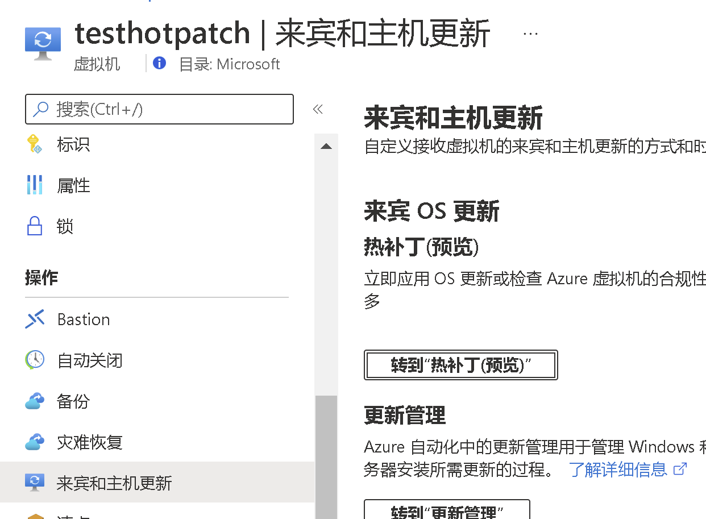
- 在这个界面
Assess updates→立即触发评估→确定
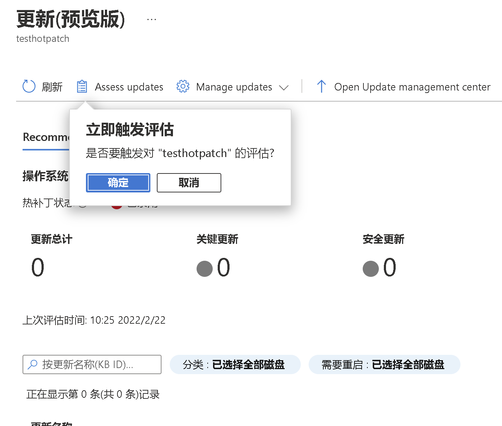
- 等待评估结束，可以看到能够安装的补丁会在下方列出来。
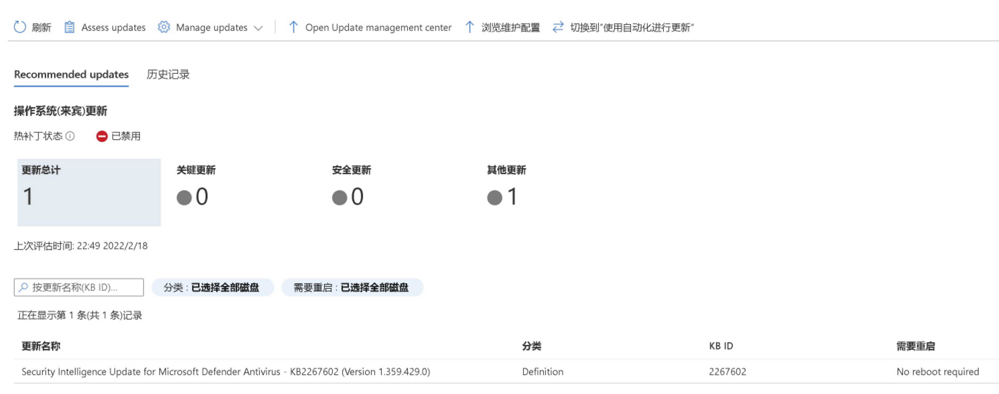
- 此时可以点击顶部的
Manage updates→one-time update进行手动安装补丁
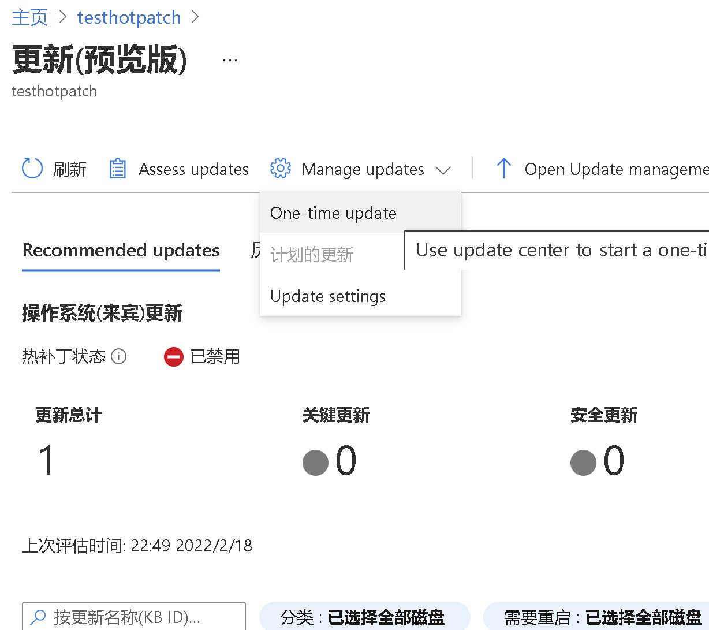
- 进行如下配置，默认不需要修改
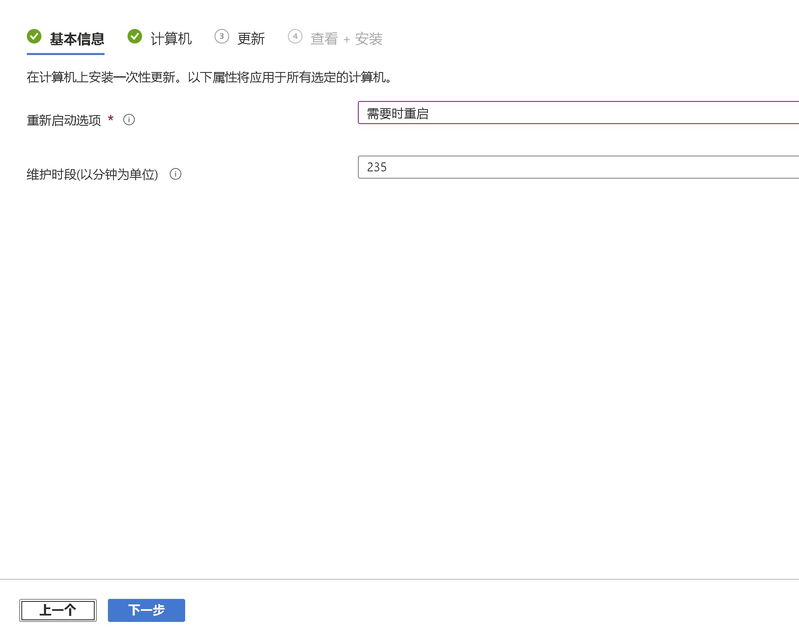
- 在左侧点击
+包含更新分类，勾选所有
- 刚才发现的补丁就可以安装了。点击
下一步继续
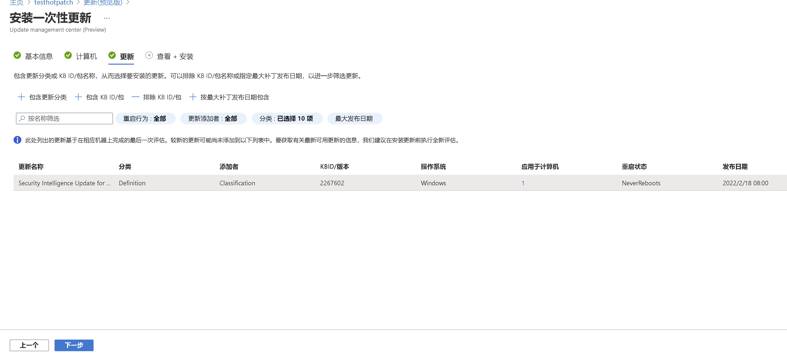
- 确认无误，正式安装
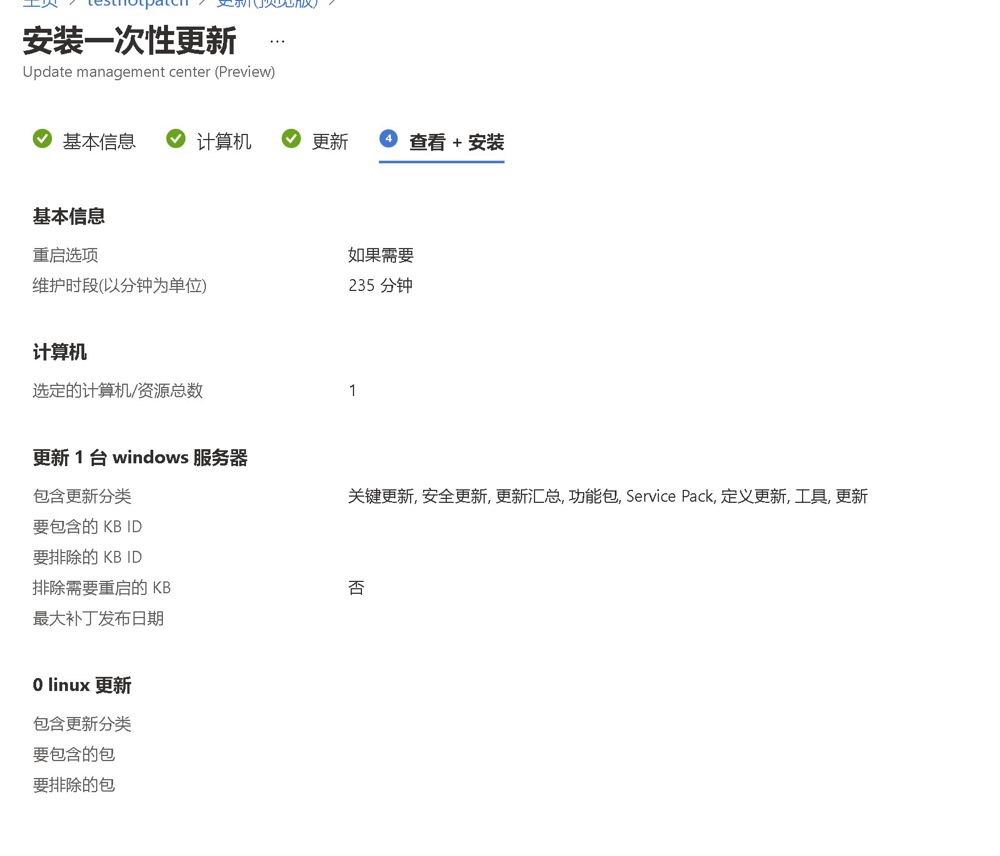
- 右上角会出现提示正在安装。
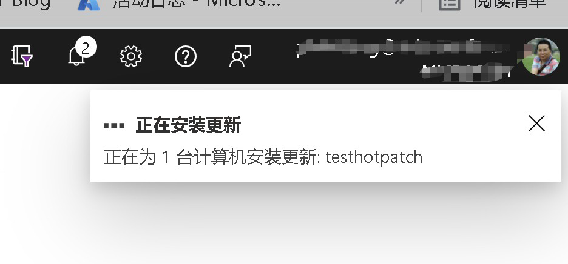
- 由于补丁不大，安装很快结束。
- 一条正常的安装日志，大概是长这个样子的。
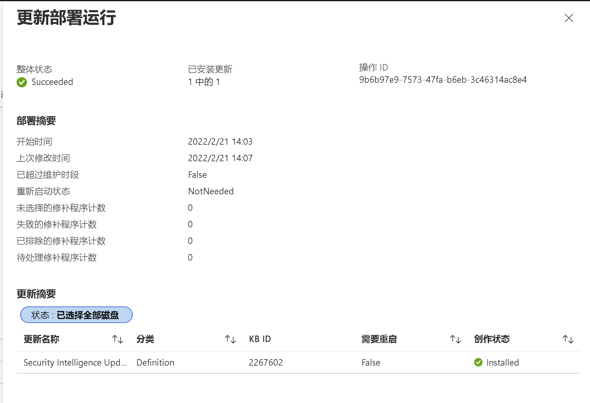
补丁安装失败的情况处理
在我的测试过程中，我发现补丁安装有失败的情况，那这个锅应该甩给热补丁么？
- 检查日志，看到有如下错误提示
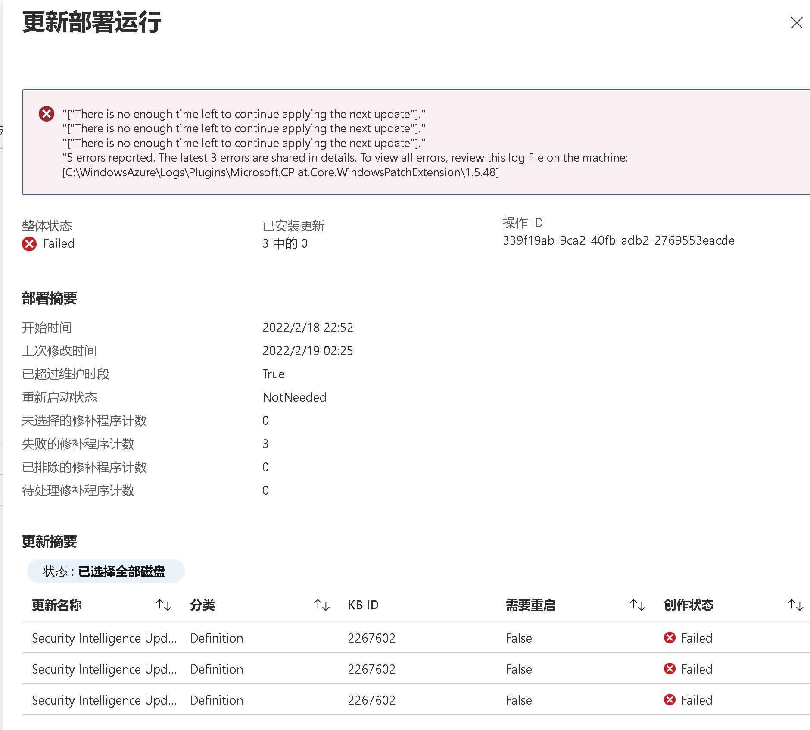
- 这里也能看到相应错误提示
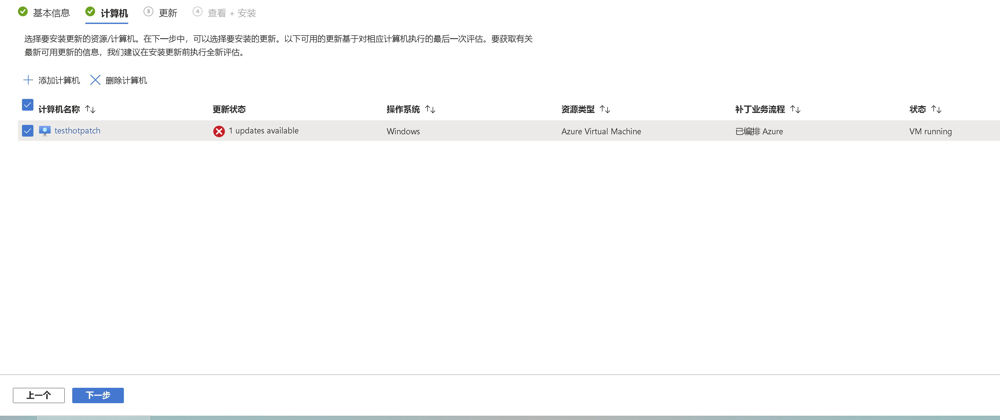
- 前往虚拟机，查看日志，由于是个core系统，没有资源管理器，所以需要开一个notepad，然后在notepad里面，使用
打开，操作这个窗口。在这里，我们可以选择单个文件，通过远程桌面，可以把文件拷贝出来。日志检查没有发现异常的地方。
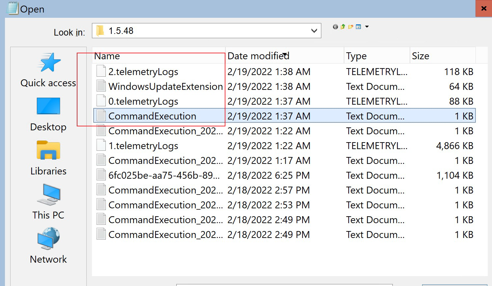
- 检查日志过程中，发现裸机内存占用很大，远程桌面也有时会断联。
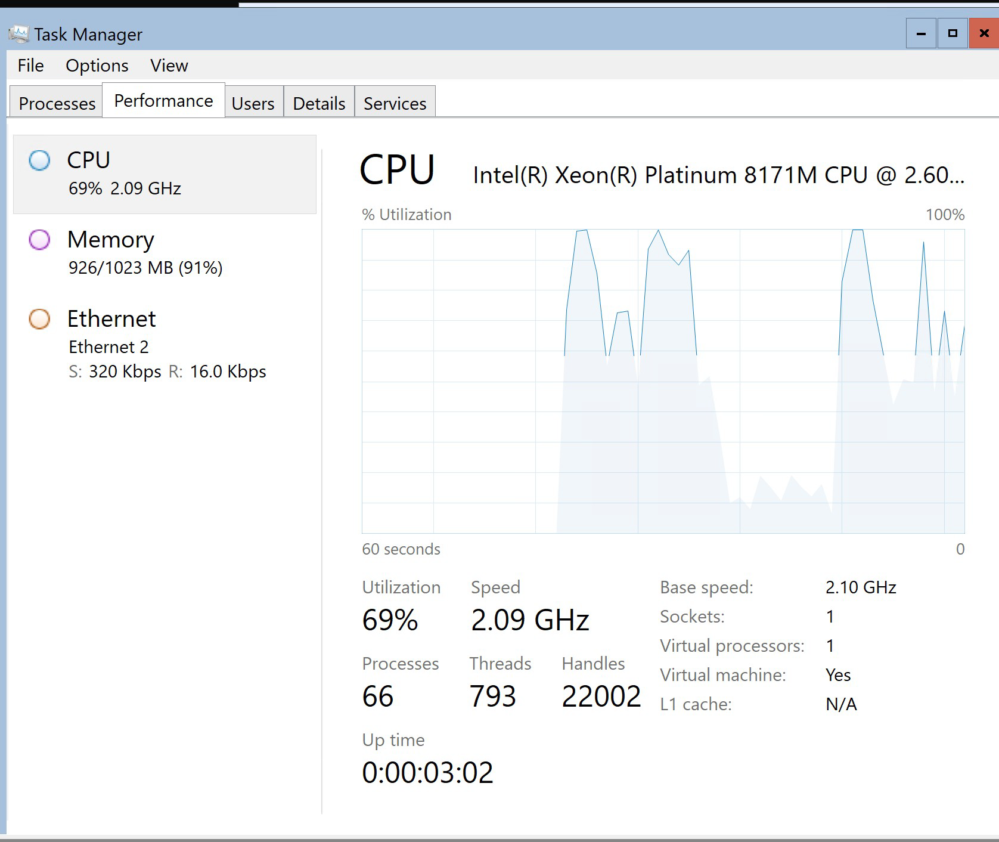
- 内存扩容为3.5G，裸连直接使用掉2G，因此可以下定论，Windows Server 2022比较占用内存资源，即使是CORE，也要分配4G内存。
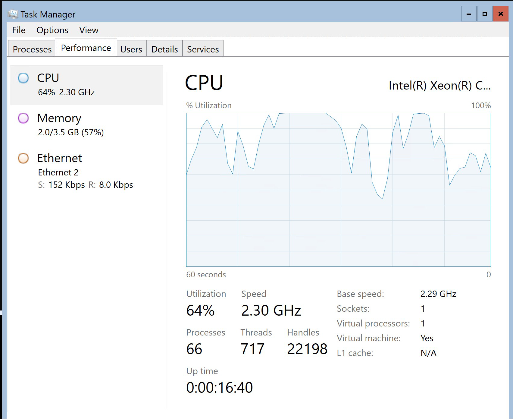
- 内存扩容后，补丁安装正常，现阶段可以看出来，Windows Server 2022对系统资源要求相对较高，这一块大家一定要有心理预期。
总结
从我最早知道热补丁这个概念的时候，我对他的期待还是蛮高的，安装补丁要重启，重启就有可能带来各种意外的问题。所以不重启的话，就能减低出现问题的可能性。
现在的功能从标配的次次重启改成了3个月重启一次。并且在Azure上，可以由Azure来托管补丁的安装过程。这对于云端用户是个利好消息。
而本地化的用户呢？其实这种改变对本地化用户也有很大的影响，在本地使用需要使用Azure Stack HCI。HCI的账单会从Azure走，进行合并。如果用户没有互联网连接，也就无法使用这项功能。
虽然没有做到完全的不重启打补丁，这是一种有很多前置条件的不重启，但这确实在某种程度上改变了和推进了云运维的模式。